| レポートNo | カテゴリ | クエ内容 | 受諾条件 | およその報酬 （スフィア・パワキ有） |
およその累計報酬 | 備考 | |
|---|---|---|---|---|---|---|---|
| 転生 回数 |
Lv | ||||||
| １ | メインクエ１ | メインクエ１ １−１−２「地下水路の探索」 を、完了させる |
０ | １ | ２３７万 | ２３７万 | 既に終わらせている人は、そのままもう一度話しかけるだけでUPする。 |
| ２ | メインクエ１ | メインクエ１ １−４−５「筆写家クリスティラ」 を、完了させる |
０ | ５０ | １０３０万 | １２６８万 | 既に終わらせている人は、そのままもう一度話しかけるだけでUPする。 |
| ３ | メインクエ１ | メインクエ１ １−６−４「酒の肴フィッシュエッグ」 を、完了させる |
０ | １００ | ４５６０万 | ５８２７万 | 既に終わらせている人は、そのままもう一度話しかけるだけでUPする。 |
| ４ | メインクエ１ | メインクエ１ １−８−９「愛の確認」 を、完了させる |
０ | １５０ | １億２０００万 | １億７８００万 | 既に終わらせている人は、そのままもう一度話しかけるだけでUPする。 |
| ５ | メインクエ１ | メインクエ１ ２−１−２「レッドアイ会長との出会い」 を、完了させる |
０ | ２００ | ２億１６００万 | ３億９５００万 | 既に終わらせている人は、そのままもう一度話しかけるだけでUPする。 |
| ６ | メインクエ１ | メインクエ１ ２−３−６「占星術師クレテウス頭領」 を、完了させる |
０ | ２５０ | ３億７３００万 | ７億６８００万 | 既に終わらせている人は、そのままもう一度話しかけるだけでUPする。 |
| ７ | メインクエ１ | メインクエ１ ２−５−１「ゲールとの密やかな会合」 を、完了させる |
０ | ３００ | ５億１６００万 | １２億８４００万 | 既に終わらせている人は、そのままもう一度話しかけるだけでUPする。 |
| ８ | メインクエ１ | メインクエ１ ２−８−１「オーガの大魔王シュウ」 を、完了させる |
０ | ３５０ | ７億５６００万 | ２０億４０００万 | 既に終わらせている人は、そのままもう一度話しかけるだけでUPする。 |
| ９ | メインクエ１ | メインクエ１ ３−１−１「アイノ・ガスピル会長との出会い」 を、完了させる |
０ | ４００ | ９億１７００万 | ２９億５７００万 | 既に終わらせている人は、そのままもう一度話しかけるだけでUPする。 |
| １０ | メインクエ１ | メインクエ１ ３−４−５「排水路工事」 を、完了させる |
０ | ４５０ | １２億２８００万 | ４１億８５００万 | 既に終わらせている人は、そのままもう一度話しかけるだけでUPする。 |
| １１ | メインクエ１ | メインクエ１ ４−１−１「完全体になったRED STONE」 を、完了させる |
０ | ５００ | １３億６３００万 | ５５億４８００万 | 既に終わらせている人は、そのままもう一度話しかけるだけでUPする。 |
| １２ | メインクエ１ | メインクエ１ ５−２−１「天上界の褒美」「RED STONEを地下界に」「RED STONEを赤い悪魔に」 のうち、いずれかを完了させる |
０ | ５５０ | １７億２７００万 | ７２億７４００万 | 既に終わらせている人は、そのままもう一度話しかけるだけでUPする。 |
| １３ | 秘密 | 秘密に２回以上行く | ０ | ６００ | １７億８３００万 | ９０億５７００万 | ◆１日に何度も「秘密２回」のクエをＵＰ出来る 秘密ダンジョンの回数が２になっていれば、 １日に何度もこのタイプのクエをＵＰ出来る。 これを活用すると、 １７番（ＲＳを天上・地下・悪魔のどこかへ渡せ）までは、 １日で一気に進められる。 便利。 ◆Ｌｖ７１１以上のキャラは話しかけるだけでＵＰ Ｌｖ７１１以上のキャラは話しかけるだけでＵＰする。 |
| １４ | 狩り （PTボス） |
PTボスを１０匹退治する （ガルカスＢ１・オーガゼネラル） |
０ | ６５０ | ２１億７６００万 | １１２億３２００万 | ミラーテレポータ（古都冒険者協会のロビーにいる） １１１６７ より。 |
| １５ | 秘密 | 秘密に２回以上行く | １ | ４００ | ９億１７００万 | １２１億５０００万 | 秘密卒のキャラは話しかけるだけでUPする。 ただしもらえるEXPがやや少なくなる模様。 |
| １６ | 狩り （PTボス） |
PTボスを１０匹退治する （王宮１Ｆ・ダークエルフ将校） |
１ | ４５０ | １２億２８００万 | １３３億７７００万 | ミラーテレポータ（古都冒険者協会のロビーにいる） １１１３８ より。 |
| １７ | メインクエ | RED STONEを天上界・地下界・赤い悪魔のどこかへ渡す | １ | ５００ | １３億６３００万 | １４７億４０００万 | ◆クエは受けた？ あわててこのクエを受けずに天上・地下・悪魔に行ってＲＳを渡してしまうと、当然クエはＵＰせず、一週間後まで進められないという大変残念な結果になる。 注意しよう。 ◆（天上界の場合）ハイムダルの手紙は持った？ これもあわてるとハイムダルに行き忘れたまま懺悔に入ってしまい、涙を流す結果となる。 注意しよう。 ◆ＵＰできない事がある？ 該当キャラで初めて天上界に行く場合、 天上界報酬をもらう所までやってもレポートクエがUPしなかったという報告が複数ある。 そこからクエを受けなおし、１週間後にもう一度やるとUPする模様。 不具合の可能性がある。 |
| １８ | 狩り （MOB） |
MOBを１００匹狩る （自キャラ−４９LvまでのMOBが対象） |
１ | ５５０ | １７億２７００万 | １６４億６７００万 | 高レベ対象の新狩場が出来ている。 詳しくは下項参照。 |
| １９ | 秘密 | 秘密に２回以上行く | １ | ６００ | １７億８３００万 | １８２億５０００万 | 秘密卒のキャラは話しかけるだけでUPする。 ただしもらえるEXPがやや少なくなる模様。 |
| ２０ | 狩り （PTボス） |
PTボスを１０匹退治する （ガルカスＢ１・オーガゼネラル） |
１ | ６５０ | ２１億７６００万 | ２０４億２６００万 | ミラーテレポータ（古都冒険者協会のロビーにいる） １１１６７ より。 |
| ２１ | 秘密 | 秘密に２回以上行く | ２ | ４００ | ９億１７００万 | ２１３億４３００万 | 秘密卒のキャラは話しかけるだけでUPする。 ただしもらえるEXPがやや少なくなる模様。 |
| ２２ | 狩り （PTボス） |
PTボスを１０匹退治する （王宮１Ｆ・ダークエルフ将校） |
２ | ４５０ | １２億２８００万 | ２２５億７０００万 | ミラーテレポータ（古都冒険者協会のロビーにいる） １１１３８ より。 |
| ２３ | メインクエ | RED STONEを天上界・地下界・赤い悪魔のどこかへ渡す | ２ | ５００ | １３億６３００万 | ２３９億３３００万 | ◆クエは受けた？ あわててこのクエを受けずに天上・地下・悪魔に行ってＲＳを渡してしまうと、当然クエはＵＰせず、一週間後まで進められないという大変残念な結果になる。 注意しよう。 ◆（天上界の場合）ハイムダルの手紙は持った？ これもあわてるとハイムダルに行き忘れたまま懺悔に入ってしまい、涙を流す結果となる。 注意しよう。 ◆ＵＰできない事がある？ 該当キャラで初めて天上界に行く場合、 天上界報酬をもらう所までやってもレポートクエがUPしなかったという報告を複数聞いている。 そこからクエを受けなおし、１週間後にもう一度やるとUPする模様。 不具合の可能性がある。 |
| ２４ | 狩り （MOB） |
MOBを１００匹狩る （自キャラ−４９LvまでのMOBが対象） |
２ | ５５０ | １７億２７００万 | ２５６億６０００万 | 高レベ対象の新狩場が出来ている。 詳しくは下項参照。 |
| ２５ | 秘密 | 秘密に２回以上行く | ２ | ６００ | １７億８３００万 | ２７４億４３００万 | 秘密卒のキャラは話しかけるだけでUPする。 ただしもらえるEXPがやや少なくなる模様。 |
| ２６ | 狩り （PTボス） |
PTボスを１０匹退治する （ガルカスＢ１・オーガゼネラル） |
２ | ６５０ | ２１億７６００万 | ２９６億１８００万 | ミラーテレポータ（古都冒険者協会のロビーにいる） １１１６７ より。 |
| ２７ | 秘密 | 秘密に２回以上行く | ３ | ４００ | ９億１７００万 | ３０５億３６００万 | 秘密卒のキャラは話しかけるだけでUPする。 ただしもらえるEXPがやや少なくなる模様。 |
| ２８ | 狩り （PTボス） |
PTボスを１０匹退治する （王宮１Ｆ・ダークエルフ将校） |
３ | ４５０ | １２億２８００万 | ３１７億６３００万 | ミラーテレポータ（古都冒険者協会のロビーにいる） １１１３８ より。 |
| ２９ | メインクエ | RED STONEを天上界・地下界・赤い悪魔のどこかへ渡す | ３ | ５００ | １３億６３００万 | ３３１億２６００万 | ◆クエは受けた？ あわててこのクエを受けずに天上・地下・悪魔に行ってＲＳを渡してしまうと、当然クエはＵＰせず、一週間後まで進められないという大変残念な結果になる。 注意しよう。 ◆（天上界の場合）ハイムダルの手紙は持った？ これもあわてるとハイムダルに行き忘れたまま懺悔に入ってしまい、涙を流す結果となる。 注意しよう。 ◆ＵＰできない事がある？ 該当キャラで初めて天上界に行く場合、 天上界報酬をもらう所までやってもレポートクエがUPしなかったという報告を複数聞いている。 そこからクエを受けなおし、１週間後にもう一度やるとUPする模様。 不具合の可能性がある。 |
| ３０ | 狩り （MOB） |
MOBを１００匹狩る （自キャラ−４９LvまでのMOBが対象） |
３ | ５５０ | １７億２７００万 | ３４８億５３００万 | 高レベ対象の新狩場が出来ている。 詳しくは下項参照。 |
| ３１ | 秘密 | 秘密に２回以上行く | ３ | ６００ | １７億８３００万 | ３６６億３６００万 | 秘密卒のキャラは話しかけるだけでUPする。 ただしもらえるEXPがやや少なくなる模様。 |
| ３２ | 狩り （PTボス） |
PTボスを１０匹退治する （ガルカスＢ１・オーガゼネラル） |
３ | ６５０ | ２１億７６００万 | ３８８億１１００万 | ミラーテレポータ（古都冒険者協会のロビーにいる） １１１６７ より。 |
| ３３ | 秘密 | 秘密に２回以上行く | ４ | ４００ | ９億１７００万 | ３９７億２９００万 | 秘密卒のキャラは話しかけるだけでUPする。 ただしもらえるEXPがやや少なくなる模様。 |
| ３４ | 狩り （PTボス） |
PTボスを１０匹退治する （王宮１Ｆ・ダークエルフ将校） |
４ | ４５０ | １２億２８００万 | ４０９億５６００万 | ミラーテレポータ（古都冒険者協会のロビーにいる） １１１３８ より。 |
| ３５ | メインクエ | RED STONEを天上界・地下界・赤い悪魔のどこかへ渡す | ４ | ５００ | １３億６３００万 | ４２３億１９００万 | ◆クエは受けた？ あわててこのクエを受けずに天上・地下・悪魔に行ってＲＳを渡してしまうと、当然クエはＵＰせず、一週間後まで進められないという大変残念な結果になる。 注意しよう。 ◆（天上界の場合）ハイムダルの手紙は持った？ これもあわてるとハイムダルに行き忘れたまま懺悔に入ってしまい、涙を流す結果となる。 注意しよう。 ◆ＵＰできない事がある？ 該当キャラで初めて天上界に行く場合、 天上界報酬をもらう所までやってもレポートクエがUPしなかったという報告を複数聞いている。 そこからクエを受けなおし、１週間後にもう一度やるとUPする模様。 不具合の可能性がある。 |
| ３６ | 狩り （MOB） |
MOBを１００匹狩る （自キャラ−４９LvまでのMOBが対象） |
４ | ５５０ | １７億２７００万 | ４４０億４６００万 | 高レベ対象の新狩場が出来ている。 詳しくは下項参照。 |
| ３７ | 秘密 | 秘密に２回以上行く | ４ | ６００ | １７億８３００万 | ４５８億２８００万 | 秘密卒のキャラは話しかけるだけでUPする。 ただしもらえるEXPがやや少なくなる模様。 |
| ３８ | 狩り （PTボス） |
PTボスを１０匹退治する （ガルカスＢ１・オーガゼネラル） |
４ | ６５０ | ２１億７６００万 | ４８０億０４００万 | ミラーテレポータ（古都冒険者協会のロビーにいる） １１１６７ より。 |
| レポートNo | カテゴリ | クエ内容 | 受諾条件 | およその報酬 （スフィア・パワキ有） |
およその累計報酬 | 備考 | |
|---|---|---|---|---|---|---|---|
| 転生 回数 |
Lv | ||||||
| １ | 狩り （MOB） |
旧レッドアイ研究所Ｂ１で MOBを２０匹狩る |
０ | ２５ | ２３７万 | ２３７万 | 記憶を２ヶ所使える人は 記憶１を協会任務担当官の前、 記憶２をジョン･マルコの前 推奨。 ジョン・マルコ（冒険家協会バーにいる） １１６２１ で直通。 |
| ２ | 狩り （MOB） |
オーガの王窟Ｂ１で MOBを３０匹狩る |
０ | ７５ | １０３０万 | １２６８万 | ジョン・マルコ（冒険家協会バーにいる） １２１２１ で直通。 |
| ３ | 狩り （MOB） |
トワイライト滝Ｂ４で MOBを４０匹狩る |
０ | １２５ | ５０７６万 | ６３４３万 | ジョン・マルコ（冒険家協会バーにいる） １２３２１ で滝Ｂ３に飛び、右下の移動ポータルからＢ４へ。 滝秘密がある上に、適正狩場として使っている人も見かける。 狩場のトラブルになるリスクがあるので、 他に人がいそうな時は注意して行おう。 |
| ４ | 秘密 | 秘密に２回以上行く | ０ | １７５ | １億３３００万 | １億９７００万 | ◆１日に何度も「秘密２回」のクエをＵＰ出来る 秘密ダンジョンの回数が２になっていれば、 １日に何度もこのタイプのクエをＵＰ出来る。 これを活用すると、 １４番（レイドをクリアしろ）までは、１日で一気に進められる。 便利。 ◆Ｌｖ７１１以上のキャラは話しかけるだけでＵＰ Ｌｖ７１１以上のキャラは話しかけるだけでＵＰする。 |
| ５ | 狩り （MOB） |
ラカリフサ北の洞窟で MOBを５０匹狩る |
０ | ２２５ | ２億６７００万 | ４億６４００万 | ミラーテレポータ（古都冒険者協会のロビーにいる） １１１３７ で、ネイダック平原／ラカリフサ北部地域に飛び、 マップの一番上。 ５０匹狩るが、 マップ全体のＭＯＢの数が多くない上に 沸きがあまり早くないので、 入口から倒しもらしがあまりないように狩っていくとよい。 もらさず倒していくと、マップの一番左上あたりでＵＰする。 |
| ６ | 狩り （MOB） |
スウェブタワー１９Ｆで MOBを６０匹狩る |
０ | ２７５ | ４億６１００万 | ９億２５００万 | ファストポータル スウェブタワー １Ｆ 飛んだ先から外に出た所にいるレッドアイ移動士に話しかけて３０００Ｇ支払い、２０Ｆへ飛ぶ。 飛んだ先の移動ポータルを入って１９Ｆへ。 |
| ７ | 狩り （MOB） |
スウェブタワーＢ３で MOBを７０匹狩る |
０ | ３２５ | ７億１９００万 | １６億４４００万 | ジョン・マルコ（冒険家協会バーにいる） １４４２１ でスウェブＢ６に飛び、そこからＢ３へ。 |
| ８ | 狩り （MOB） |
スウェブタワーＢ８で MOBを７０匹狩る |
０ | ３７５ | １０億５０００万 | ２６億９４００万 | ジョン・マルコ（冒険家協会バーにいる） １４４２１ でスウェブＢ６に飛び、そこからＢ８へ。 Ｂ９への移動ポータルのそばを記憶２推奨。 次がスウェブＢ１１のため、記憶しておくと少し楽。 |
| ９ | 狩り （MOB） |
スウェブタワーＢ１１で MOBを８０匹狩る |
０ | ４２５ | １４億５９００万 | ４１億５３００万 | Ｂ８の記憶を取った人は記憶２を使って。 取っていない人は ジョン・マルコ（冒険家協会バーにいる） １４４２１ でスウェブＢ６に飛び、そこから走る。 マップ中央付近にオーガが５、６匹ずつ固まって沸く箇所が多くあるので、 そのあたりを周回ぽく狩っていくとよさげ。 |
| １０ | 秘密 | 秘密に２回以上行く | ０ | ４７５ | １９億５１００万 | ６１億０４００万 | 秘密卒のキャラは話しかけるだけでUPする。 |
| １１ | 狩り （MOB） |
兵営Ｂ１で MOBを９０匹狩る |
０ | ５２５ | ２５億３０００万 | ８６億３３００万 | ミラーテレポータの前を記憶２推奨。 ミラーテレポータ（古都冒険者協会のロビーにいる） １１１４８ で、直通。 ミラーダンジョンでもカウントされる。 混んでいる時は活用を。 低下系攻撃をしてくるＭＯＢがいる。 低下系抵抗の完備推奨。 ・飛んだ所にいる低レベのゾンビ ・フーフー・ブレイザー系のグラのMOB ・ＰＴボス（火炎の鬼） は、クエの対象外となっている模様。 火力のあまりない人は 右下エリアに行き、 コートナイト（青紫の鎧）、緑のラット、赤いラット の３種類のみを、ぐるぐる回って狩るのがおすすめ。 |
| １２ | 狩り （MOB） |
商店２Ｆで MOBを１００匹狩る |
０ | ５７５ | ３２億０２００万 | １１８億３５００万 | ミラーテレポータ（古都冒険者協会のロビーにいる） １１１５９ で、旅館１Ｆに飛び、左下に進んでいったん外に出る。 すぐ右上から商店１Ｆに入り、一番右上の奥まで進んで２Ｆへ。 １Ｆではないので注意。 |
| １３ | 狩り （PTボス） |
PTボスを２０匹退治する （ビッグマウスダンジョンＢ４： ラットキング） |
０ | ６２５ | ３９億７１００万 | １５８億０７００万 | ミラーテレポータ（古都冒険者協会のロビーにいる） １１１６４ で、直通。 ミラーダンジョンでもカウントされる。 混んでいる時は活用を。 沸き場所は下図参照。 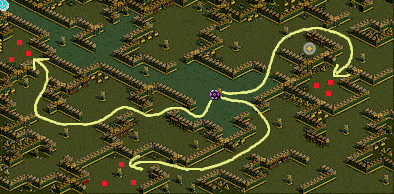 |
| １４ | レイド | レイドボスを１回以上クリアする | ０ | ６７５ | ４８億４２００万 | ２０６億４９００万 | レイドボスを討伐する。 重要な注意点が２つある。 以下参照の上、注意されたし。 ◆レイドボスを倒す前にクエを受けておこう このクエをやる際には、 必ずレイドボスを倒す前に、このクエを受けておく事。 レイドボスを倒してからクエを受けてもＵＰせず、 涙を流す事になる。注意しよう。 ◆後日にUPする時は、水曜をまたがないようにしよう クエを受ける→レイドボスを倒す をした後、 ＵＰをせずに次の水曜までほうっておくと レイドボスを倒したカウントが０になり、ＵＰ出来なくなる。 この場合、もう一度レイドボスを倒さないといけなくなる。 （例） 月曜にレイドボスを倒す。火曜にパワキを出してＵＰ → ＵＰ可能 月曜にレイドボスを倒す。水曜にパワキを出してＵＰ → ＵＰできない 知人が運営に確認した所、「そういう仕様である」と返ってきた模様。 パワキを出すタイミングの都合ですぐにＵＰしない人は 十分に注意されたし。 参考までに、 レイドの一週間は水曜から始まり、翌週火曜で終わる。 すなわち、 一週間のスタートが水曜の０時１０分の便、 一週間の最後が翌週火曜の２３時の便となる。 カレンダー的な日〜土（または月〜日）ではないので注意。 |
| １５ | 狩り （PTボス） |
PTボスを１０匹退治する （暴かれた納骨堂Ｂ１： デスピンサー） |
１ | ４２５ | １４億５９００万 | ２２１億０８００万 | ミラーテレポータ（古都冒険者協会のロビーにいる） １１１３５ で、直通。 ミラーダンジョンでもカウントされる。 混んでいる時は活用を。 沸き場所は下図参照。 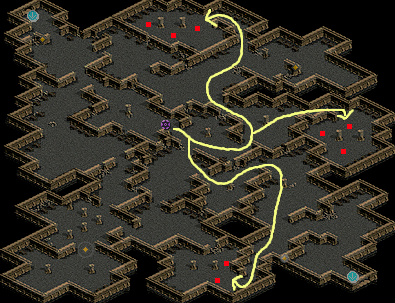 |
| １６ | 秘密 | 秘密に２回以上行く | １ | ４７５ | １９億５１００万 | ２４０億５９００万 | 秘密卒のキャラは話しかけるだけでUPする。 |
| １７ | 狩り （PTボス） |
PTボスを１５匹退治する （兵営Ｂ１：火炎の鬼） |
１ | ５２５ | ２５億３０００万 | ２６５億８９００万 | ミラーテレポータ（古都冒険者協会のロビーにいる） １１１４８ で、直通。 ミラーダンジョンでもカウントされる。 混んでいる時は活用を。 低下系攻撃をしてくるＭＯＢがいる。 低下系抵抗の完備推奨。 沸き場所は下図参照。 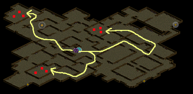 |
| １８ | レイド | レイドボスを１回以上クリアする | １ | ５７５ | ３２億０２００万 | ２９７億９１００万 | レイドボスを討伐する。 |
| １９ | 秘密 | 秘密に２回以上行く | １ | ６２５ | ３９億７１００万 | ３３７億６０００万 | 秘密卒のキャラは話しかけるだけでUPする。 |
| ２０ | 狩り （PTボス） |
PTボスを２０匹退治する （時森２層目：ハゲワシ闘士） |
１ | ６７５ | ４８億４２００万 | ３８６億０４００万 | ミラーテレポータ（古都冒険者協会のロビーにいる） １１１７６ で、直通。 対象マップは２層目。 ３層目ではないので注意。 ３層目のハゲワシ闘士を倒してもカウントされない。 ミラーダンジョンでもカウントされる。 混んでいる時は活用を。 沸き場所は下図参照。 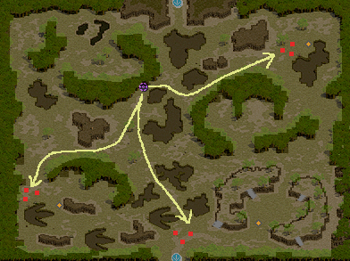 |
| ２１ | 狩り （PTボス） |
PTボスを１０匹退治する （暴かれた納骨堂Ｂ１： デスピンサー） |
２ | ４２５ | １４億５９００万 | ４００億６４００万 | ミラーテレポータ（古都冒険者協会のロビーにいる） １１１３５ で、直通。 |
| ２２ | 秘密 | 秘密に２回以上行く | ２ | ４７５ | １９億５１００万 | ４２０億１４００万 | 秘密卒のキャラは話しかけるだけでUPする。 |
| ２３ | 狩り （PTボス） |
PTボスを１５匹退治する （兵営Ｂ１：火炎の鬼） |
２ | ５２５ | ２５億３０００万 | ４４５億４４００万 | ミラーテレポータ（古都冒険者協会のロビーにいる） １１１４８ で、直通。 |
| ２４ | レイド | レイドボスを１回以上クリアする | ２ | ５７５ | ３２億０２００万 | ４７７億４６００万 | レイドボスを討伐する。 |
| ２５ | 秘密 | 秘密に２回以上行く | ２ | ６２５ | ３９億７１００万 | ５１７億１７００万 | 秘密卒のキャラは話しかけるだけでUPする。 |
| ２６ | 狩り （PTボス） |
PTボスを２０匹退治する （時森２層目：ハゲワシ闘士） |
２ | ６７５ | ４８億４２００万 | ５６５億６０００万 | ミラーテレポータ（古都冒険者協会のロビーにいる） １１１７６ で、直通。 |
| ２７ | 狩り （PTボス） |
PTボスを１０匹退治する （暴かれた納骨堂Ｂ１： デスピンサー） |
３ | ４２５ | １４億５９００万 | ５８０億１９００万 | ミラーテレポータ（古都冒険者協会のロビーにいる） １１１３５ で、直通。 |
| ２８ | 秘密 | 秘密に２回以上行く | ３ | ４７５ | １９億５１００万 | ５９９億６９００万 | 秘密卒のキャラは話しかけるだけでUPする。 |
| ２９ | 狩り （PTボス） |
PTボスを１５匹退治する （兵営Ｂ１：火炎の鬼） |
３ | ５２５ | ２５億３０００万 | ６２４億９９００万 | ミラーテレポータ（古都冒険者協会のロビーにいる） １１１４８ で、直通。 |
| ３０ | レイド | レイドボスを１回以上クリアする | ３ | ５７５ | ３２億０２００万 | ６５７億０１００万 | レイドボスを討伐する。 |
| ３１ | 秘密 | 秘密に２回以上行く | ３ | ６２５ | ３９億７１００万 | ６９６億７２００万 | 秘密卒のキャラは話しかけるだけでUPする。 |
| ３２ | 狩り （PTボス） |
PTボスを２０匹退治する （時森２層目：ハゲワシ闘士） |
３ | ６７５ | ４８億４２００万 | ７４５億１５００万 | ミラーテレポータ（古都冒険者協会のロビーにいる） １１１７６ で、直通。 |
| ３３ | 狩り （PTボス） |
PTボスを１０匹退治する （暴かれた納骨堂Ｂ１： デスピンサー） |
４ | ４２５ | １４億５９００万 | ７５９億７４００万 | ミラーテレポータ（古都冒険者協会のロビーにいる） １１１３５ で、直通。 |
| ３４ | 秘密 | 秘密に２回以上行く | ４ | ４７５ | １９億５１００万 | ７７９億２５００万 | 秘密卒のキャラは話しかけるだけでUPする。 |
| ３５ | 狩り （PTボス） |
PTボスを１５匹退治する （兵営Ｂ１：火炎の鬼） |
４ | ５２５ | ２５億３０００万 | ８０４億５４００万 | ミラーテレポータ（古都冒険者協会のロビーにいる） １１１４８ で、直通。 |
| ３６ | レイド | レイドボスを１回以上クリアする | ４ | ５７５ | ３２億０２００万 | ８３６億５６００万 | レイドボスを討伐する。 |
| ３７ | 秘密 | 秘密に２回以上行く | ４ | ６２５ | ３９億７１００万 | ８７６億２８００万 | 秘密卒のキャラは話しかけるだけでUPする。 |
| ３８ | 狩り （PTボス） |
PTボスを２０匹退治する （時森２層目：ハゲワシ闘士） |
４ | ６７５ | ４８億４２００万 | ９２４億７０００万 | ミラーテレポータ（古都冒険者協会のロビーにいる） １１１７６ で、直通。 |
| Ｌｖ帯 | 物理向け狩場 （MOBが固い、EXPがうまい） |
知識向け狩場 （MOBがやわい、EXPがうまくない） |
|---|---|---|
| ７５０〜８００ | ◆ブラックファイヤー外郭 ■行き方 漆黒の城に入る →ニビーダンに話して奥へ →左上「没落した町」方面へ進む →「没落した町」を通り過ぎ、一番上の方（１８９，１０）にある移動ポータルに入って到着。 ■連動マップ アウグ・ブリッジ（グループ４） 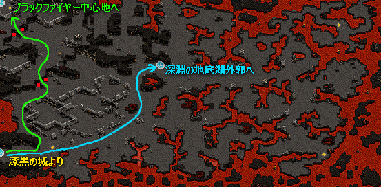 |
◆深淵の地底湖外郭 ■行き方 「漆黒の城」（１８９，１０）の移動ポータルに入る →「ブラックファイヤー外郭」の真ん中あたりの移動ポータルに入って到着。 ■連動マップ アウグ・ブリッジ（グループ４） 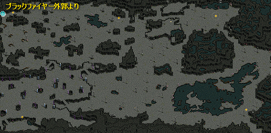 |
| ８００〜８７５ | ◆ブラックファイヤー洞窟 ■行き方 「漆黒の城」（１８９，１０）の移動ポータルに入る →「ブラックファイヤー外郭」の一番左上の移動ポータルに入る →「ブラックファイヤー中心地」の真ん中あたりの移動ポータルに入って到着。 ■連動マップ アウグ・ブリッジ（グループ４） 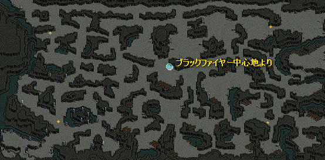 |
◆ブラックファイヤー中心地 ■行き方 「漆黒の城」（１８９，１０）の移動ポータルに入る →「ブラックファイヤー外郭」の一番左上の移動ポータルに入って到着。 ■連動マップ アウグ・ブリッジ（グループ４） 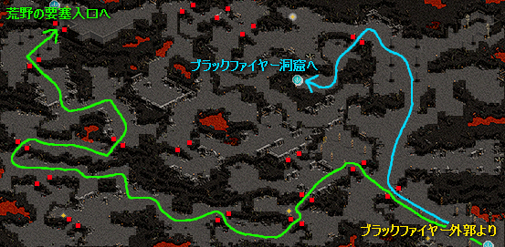 |
| ８５０〜９２５ | ◆荒野の要塞入口 ■行き方 「漆黒の城」（１８９，１０）の移動ポータルに入る →「ブラックファイヤー外郭」の一番左上の移動ポータルに入る →「ブラックファイヤー中心地」の一番左上の移動ポータルに入って到着。 ■連動マップ アウグ・ブリッジ（グループ４） 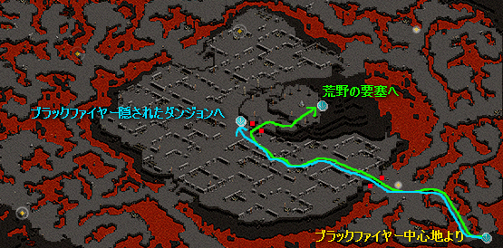 |
◆荒野の要塞 ■行き方 「漆黒の城」（１８９，１０）の移動ポータルに入る →「ブラックファイヤー外郭」の一番左上の移動ポータルに入る →「ブラックファイヤー中心地」の一番左上の移動ポータルに入る →「荒野の要塞入口」の真ん中あたりに２つある移動ポータルのうちの右側に入って到着。 ■連動マップ アウグ・ブリッジ（グループ４） 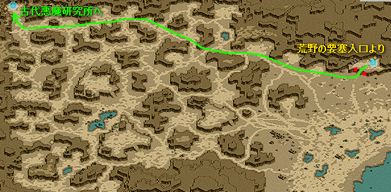 |
| ９２５〜９５０ | ◆ブラックファイヤー隠されたダンジョン ■行き方 「漆黒の城」（１８９，１０）の移動ポータルに入る →「ブラックファイヤー外郭」の一番左上の移動ポータルに入る →「ブラックファイヤー中心地」の一番左上の移動ポータルに入る →「荒野の要塞入口」の真ん中あたりに２つある移動ポータルのうちの左側に入って到着。 ■連動マップ アウグ・ブリッジ（グループ４） ■備考 MOBがアクティブなので、近づくだけで攻撃して来る。注意。 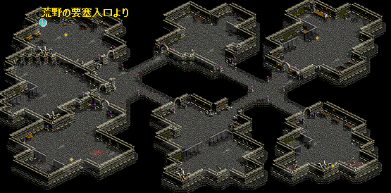 |
◆古代悪魔研究所 ■行き方 「漆黒の城」（１８９，１０）の移動ポータルに入る →「ブラックファイヤー外郭」の一番左上の移動ポータルに入る →「ブラックファイヤー中心地」の一番左上の移動ポータルに入る →「荒野の要塞入口」の真ん中あたりに２つある移動ポータルのうちの右側に入る →「荒野の要塞」の一番左上の移動ポータルに入って到着。 ■連動マップ アウグ・ブリッジ（グループ４） 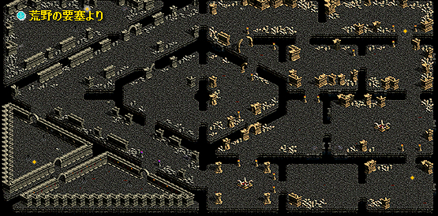 |